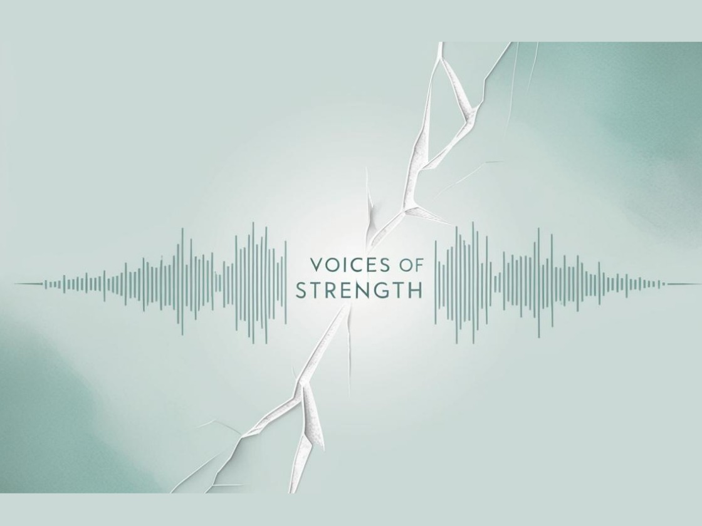

Voices of Strength
A storytelling space for people who need to be heard without performing.
Voices of Strength invites honest reflection, anonymous submissions, journal-style storytelling, and healing-centered conversations that remind people they are not alone.
What it includes
- Anonymous or named story submissions.
- Healing reflections and journal prompts.
- Future voice-only podcast and community story archive.
- A raw, compassionate tone that prioritizes truth over perfection.
